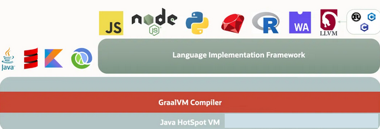

JVM
JVM 执行字节码的过程
- 类加载：将类的字节码加载到内存中
- 字节码验证：在将字节码转换为机器码之前对其进行验证，以确保安全性
- 即时编译（JIT）：通过运行时将字节码编译为本地机器码，提高 Java 应用程序性能
JIT
JIT（Just-In-Time Compilation，即时编译）是一种性能优化技术，在运行时将 Java 字节码转换为本地机器代码。提高程序执行速度，因为直接执行机器代码通常比解释执行字节码要快得多。JIT 工作原理：
- 解释执行与编译执行：java 应用启动时，JVM 先以解释方式执行字节码。对于被频繁调用的方法或“热点代码”，JIT 编译器会在后台将其编译成本地机器代码，并缓存起来，以便后续可以直接使用编译后的代码。
- 动态编译：JIT 编译不是一次性完成的，而是根据程序的实际运行情况，选择性地对部分代码进行编译。这使得它可以专注于最需要优化的部分，从而更高效地利用资源。
AOT
Java 9 开始 JVM 支持 AOT 编译（Ahead-Of-Time Compilation，预编译），可以在编译期就将Java代码编译成机器码，从而进一步加快启动时间。
Java HostSpot VM
运行 Java 字节码的基础，并提供标准功能，如即时编译（JIT）、垃圾回收和线程管理。
GraalVM
新型的多语言虚拟机，它不仅支持 Java，还支持其他编程语言。

GraalVM 的基础层是 Java HostSpot VM，作用类似于传统的 JVM，HotSpot VM 将 Graal 编译器集成为其 JIT 编译器；Graal 编译器取代了 HotSpot VM 中传统的 C2 编译器，为 Java 和其他语言提供更好的优化；
GraalVM 编译器还支持提前编译（AOT），用于生成原生镜像；
GraalVM 的原生镜像在运行时不需要传统的 JVM，因此消耗的内存和 CPU 更少；
除了支持 JVM 语言（java、scala 等），GraalVM 语言实现框架层使 GraalVM 能够支持多种编程语言。